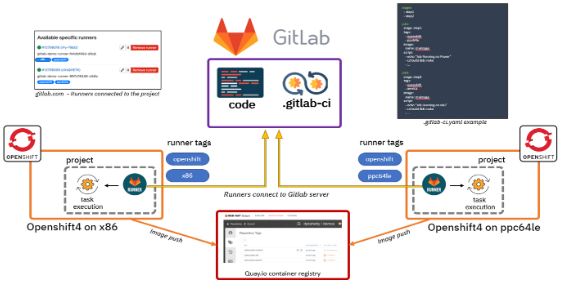

Intégration Continue (CI)
L'intégration continue (CI) est une pratique de développement logiciel où les développeurs fusionnent fréquemment leurs modifications de code dans un référentiel partagé. Chaque fusion déclenche automatiquement le processus de build, de test et de déploiement, permettant ainsi une détection rapide des erreurs et une garantie de la qualité du code.
Exemple de Pipeline CI :
Supposons que vous développiez une application web et que vous utilisiez Git comme système de contrôle de version, voici comment votre pipeline pourrait être configuré par les suivants:
- Déclenchement : Chaque fois qu'un développeur pousse du code sur la branche principale (par exemple, la branche "main"), le pipeline CI est déclenché.
- Construction : Le pipeline commence par la construction de l'application à partir du code source disponible sur la branche "main".
- Tests : Une fois la construction terminée, le pipeline exécute une batterie de tests automatisés, y compris des tests unitaires, d'intégration et de système, pour vérifier le bon fonctionnement de l'application.
- Analyse du code : Le pipeline peut également inclure des étapes d'analyse statique du code pour identifier les problèmes potentiels de qualité du code, tels que la complexité excessive ou les vulnérabilités de sécurité.
- Notifications : En cas d'échec de l'une des étapes du pipeline, des notifications sont envoyées aux développeurs pour les informer des problèmes détectés afin qu'ils puissent les corriger rapidement.
Déploiement Continu (CD)
Le déploiement continu (CD) étend les principes de l'intégration continue en automatisant le processus de déploiement des modifications de code validées dans un environnement de production ou de pré-production.
Exemple de Pipeline CD :
Prenons l'exemple d'une application web déployée sur un service cloud tel qu'Amazon Web Services (AWS). Voici comment votre pipeline CD pourrait être configuré :
- Approbation manuelle : Après la réussite des tests dans le pipeline CI, une approbation manuelle peut être requise pour déclencher le déploiement dans l'environnement de production.
- Déploiement : Une fois l'approbation obtenue, le pipeline CD déclenche automatiquement le processus de déploiement dans l'environnement de production, en mettant à jour les instances de serveur ou les conteneurs d'application.
- Vérification post-déploiement : Le pipeline peut inclure des tests supplémentaires dans l'environnement de production pour s'assurer que les modifications sont correctement déployées et ne provoquent pas de régression.
- Surveillance et rollback : Après le déploiement, le pipeline surveille les performances de l'application en production et peut déclencher un rollback automatique en cas de défaillance ou de performance insatisfaisante.
Implementation de Pipeline CI/CD
En combinant CI et CD, les équipes de développement peuvent automatiser et accélérer le processus de développement logiciel tout en garantissant la qualité et la fiabilité des applications déployées. Il existe plusieurs outils populaires pour créer des pipelines CI/CD, chacun offrant ses propres fonctionnalités et avantages.
Voici les exemples des principaux outils :
- Jenkins : Jenkins est l'un des outils CI/CD les plus anciens et les plus largement utilisés. Il offre une grande flexibilité grâce à son architecture extensible basée sur des plugins.
- Travis CI : Travis CI est un service d'intégration continue hébergé, principalement utilisé pour les projets open source. Il prend en charge l'intégration native avec GitHub et offre une configuration simple basée sur un fichier de configuration YAML.
- CircleCI : CircleCI est une plateforme d'intégration et de déploiement continus qui prend en charge les projets hébergés sur GitHub et Bitbucket. Il offre des options de configuration flexibles et une intégration transparente avec les principaux fournisseurs cloud.
- GitLab CI/CD : GitLab CI/CD est intégré directement dans l'outil de gestion de code source GitLab, offrant ainsi une solution tout-en-un pour la gestion du code, l'intégration continue et le déploiement continu.
- GitHub Actions : GitHub Actions est un service d'automatisation intégré à GitHub, permettant aux développeurs de créer des workflows personnalisés directement dans leur référentiel GitHub.
- Azure DevOps : Azure DevOps, anciennement connu sous le nom de Visual Studio Team Services (VSTS), est une suite complète d'outils de développement, y compris des fonctionnalités d'intégration continue et de déploiement continu.
Ces outils offrent une gamme de fonctionnalités pour automatiser le processus de développement logiciel, du build et des tests à la livraison et au déploiement continus. Le choix de l'outil dépend souvent des besoins spécifiques du projet, de la préférence de l'équipe et de l'intégration avec d'autres outils et services utilisés dans le cadre du développement.

Gitlab Pipeline : 